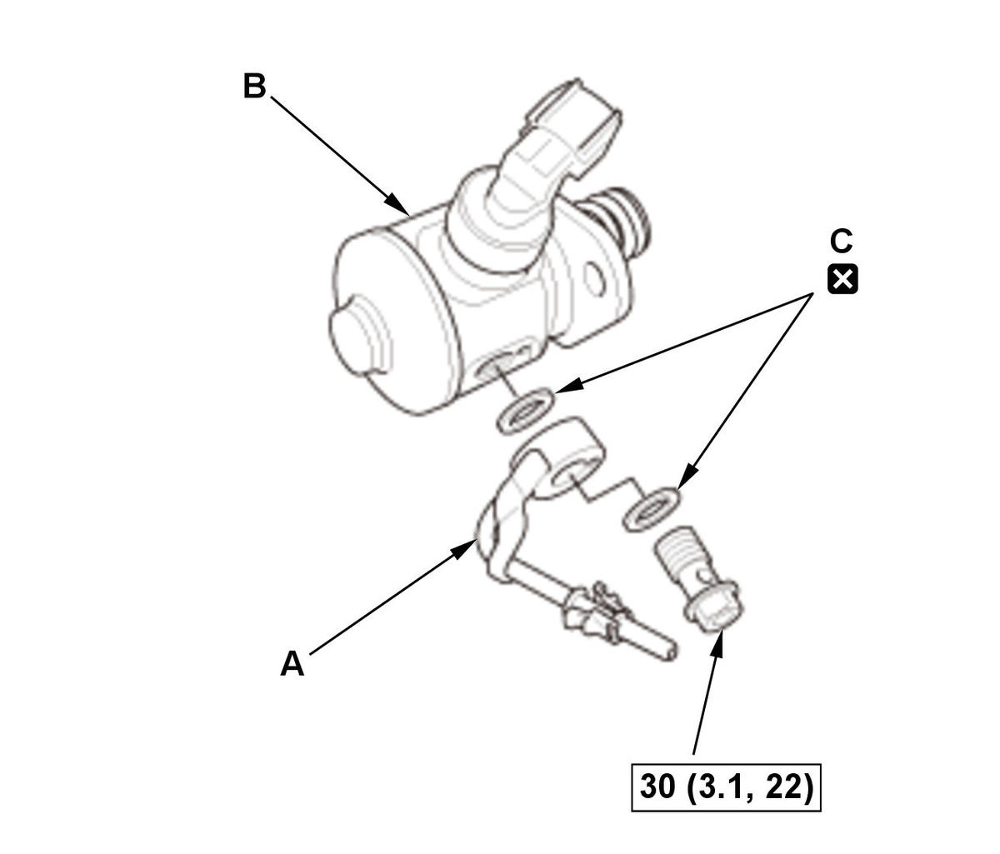
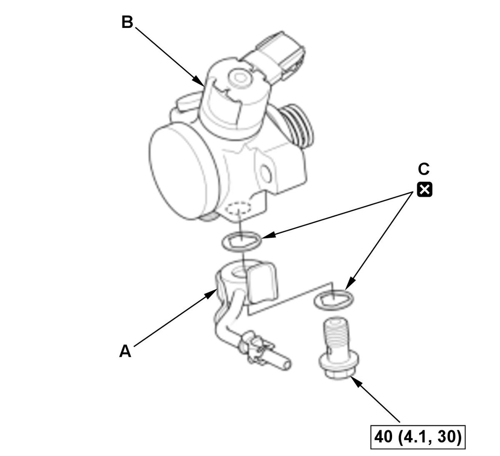
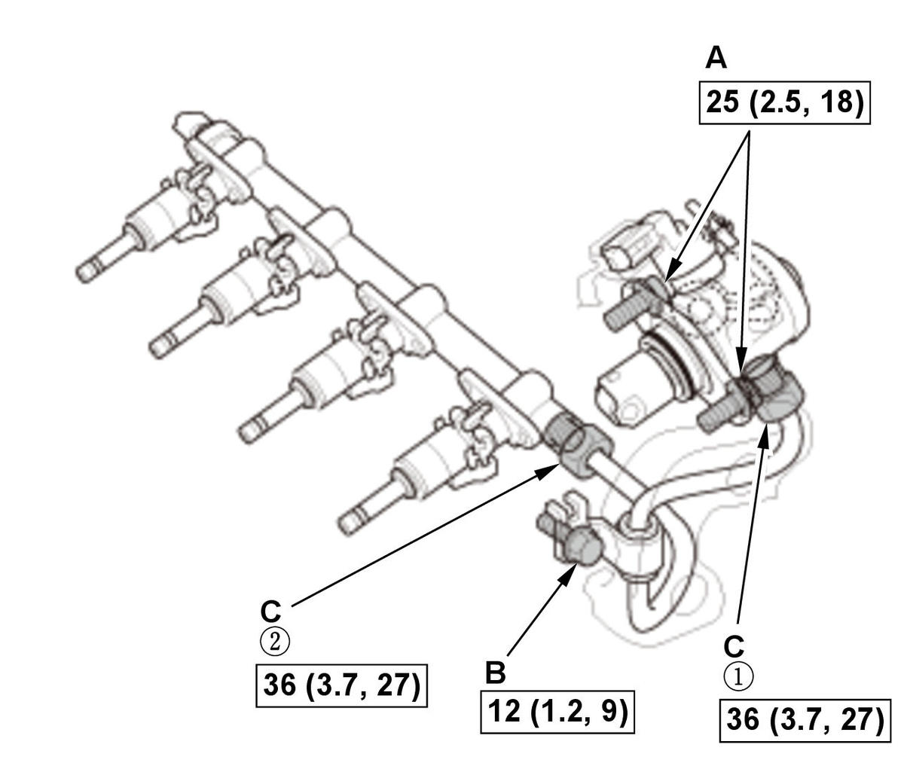
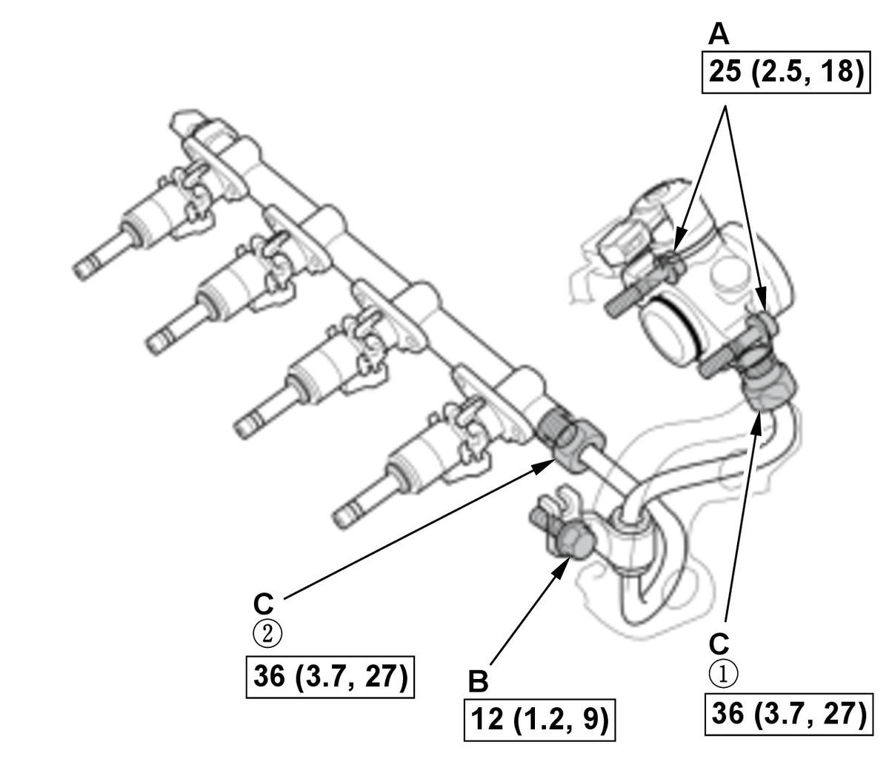

High Pressure Fuel Pump Removal and Installation (L15B7/L15BA/L15BY): Installation
WARNING:
Flammable - Keep Fire Away
NOTE:
- How to read the torque specifications .
- Refer to the Fuel and Emissions Systems Service Precautions before disconnecting the fuel line.
- Camshaft Timing - Set
1. Check the position of the cam (A) that drives high pressure fuel pump as shown. If the cam position angle is wrong as shown, rotate the crankshaft to set it. - High Pressure Fuel Pump - InstallFig 1: High Pressure Fuel Pump Components With Torque Specifications (L15B7/L15BA/L15BY - Except Si)

Courtesy of HONDA, U.S.A., INC.
Courtesy of HONDA, U.S.A., INC.1. Install the fuel feed pipe (A) to the high pressure fuel pump (B) with new sealing washers (C). 2. Coat the pump lifter (A), the cam (B), a new O-ring (C), and around the bore of the lifter insert with clean engine oil. 3. Install the pump lifter and the high pressure fuel pump (D) with the O-ring.
4. Temporarily tighten the bolts (E) in an alternate pattern until the high pressure fuel pump is in contact with the cylinder head.
NOTE: To prevent the O-ring from damaging, do not use any power tools (pneumatic or electric).
5. Connect the connector (F).
- Fuel Joint Pipe - Install
NOTE: Before you install the fuel joint pipe (A), loosen the high pressure fuel pump mounting bolts (B). 1. Lubricate the top of the new fuel joint pipe (C) and the threaded area (D) of the fuel rail and the high pressure fuel pump with polyethylene glycol of a new fuel joint pipe kit.
NOTE: Do not reuse the fuel joint pipe.
2. Tighten the fuel joint pipe nuts (E) by hand until the end of the joint pipe is seated on the fuel rail and the high pressure fuel pump.
3. Set the fuel joint pipe bracket (F) to the cylinder head, and loosely install the bolt (G).
Fig 3: High Pressure Fuel Pump Components And Fuel Joint Pipe Nuts With Tightening Sequence And Torque Specifications (L15B7/L15BA/L15BY - Except Si)
Courtesy of HONDA, U.S.A., INC.Fig 4: High Pressure Fuel Pump Components And Fuel Joint Pipe Nuts With Tightening Sequence And Torque Specifications (L15B7/L15BA/L15BY - Si)
Courtesy of HONDA, U.S.A., INC.4. Tighten the high pressure fuel pump mounting bolts (A) to the specified torque. 5. Tighten the fuel joint pipe bracket mounting bolt (B) to the specified torque.
6. Tighten the fuel joint pipe nut (C) to the specified torque in the numbered sequence shown.
NOTE: A crowfoot-type special tool increases the torque applied by the torque wrench. Refer to Service Precautions for details on how to recalculate the torque wrench setting .
- High Pressure Fuel Pump Cover - Install
1. Install the high pressure fuel pump cover (A). NOTE: The high pressure fuel pump cover will be reinstalled after the fuel leak check.
- Fuel Leak - Check